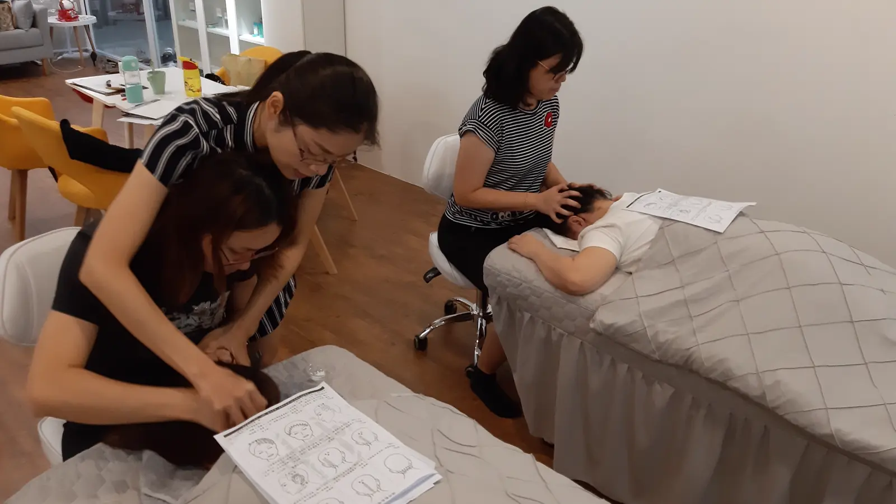

Your concern · Forehead & Scalp
A forehead that won’t relax often starts above the hairline
Lines that stay after you stop frowning. A forehead that feels tight by evening. A scalp that hardly moves. Here’s what’s usually behind it, a 10-second check, and one thing to try tonight.
HomeYour concernForehead & Scalp
The short answer
The forehead and the scalp work as one sheet. The muscle that raises your brows pulls against a firm layer over the top of your skull, so a tight scalp can keep the forehead half-raised all day. A small muscle between the brows adds the vertical “11” lines. Screens, focus, and squinting keep both busy. Gentle work from the brow up into the hairline can help the forehead let go for a while. A sudden, severe headache, or frequent headaches, need a doctor.
Find what sounds like you
Which of these sounds like you?
Each one has its own guide.
- Frown lines show even at restFrown lines and a tense brow
- Your forehead feels tense by eveningA tense forehead at the end of the day
- Your scalp or hairline feels tightScalp and hairline tension
10-second self-care observation
A 10-second check: which side is tighter?
Forehead tightness often reaches back along the side of the head.
A self-care observation, not a medical assessment. Headaches with a tight band around the head are worth discussing with a doctor; the NHS explains when.
Try it tonight
One gentle line from brow to hairline
With a little cream, rest your fingertips just above one brow and glide lightly straight up to the hairline. Work across the forehead a little at a time, from above the inner end of the brow to above the tail. Keep your brows soft. Then notice whether your forehead rests more easily.
- Start just above the inner end of one brow.
- End at the hairline, working across in gentle upward lines to above the tail of the brow.
Illustration. The route only. Glide lightly; it should never hurt.
“The most common mistake is covering too much at once, doing three lines in one pass. That isn’t wrong, but one line at a time feels different, and it’s more precise.”Yu-Ting Lan, on new students
Stop if anything aches. Skip any area with broken skin or a recent injection. This is one line of a longer routine; the full method works the face in a set order.
Your next step
Your next step
Forehead work starts just above the brow. Watch Yu-Ting do that first step close up, at real speed.
The demo is sent by email; the profile shows your result on screen. The paid course covers the brow line and the eye area. Educational self-care, not medical care.
Common questions
Forehead and scalp questions
Is bojin a natural alternative to Botox?
No. Botox blocks the signal to the muscle for months. Bojin is a few minutes of gentle work that can help a held forehead let go for a while. If you’ve had injections, wait as long as your provider advises before working the area.
Can it smooth forehead lines?
Lines formed over years won’t disappear. What can change is how much the forehead is working at rest, which can make it look a little calmer. That doesn’t last and varies from person to person.
More Forehead & Scalp guides (5)
Before you practice, read who should be careful. New to bojin? Start with what facial bojin is.
Sources
- NHS. Tension headaches.
- American Academy of Dermatology. 11 ways to reduce premature skin aging.